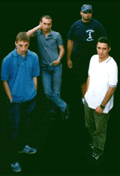

Welcome to the Sterile Noiz Klan homepage!

|
April 11, 1999 : The album is out! Look for it in your favorite music shop or contact Hammermüzik to get a "fix!" ;-)
March 16, 1999 : We have a new guestbook! We hope it will prove to be more reliable than the previous one. Please take a moment to sign it (again?).
October 10, 1998 : Opened the Noiz samples page and added the SNK Guestbook to contact page.
|
You can navigate through the site using the navigation bar at the left-hand side of the screen.
If you feel the need to e-mail us for any reason,
or want to sign our guestbook,
please use the "Contact" icon at the navigation bar.
Best viewed at at least 800x600 resolution.
Web design and graphics by Özgür Dinçer
|